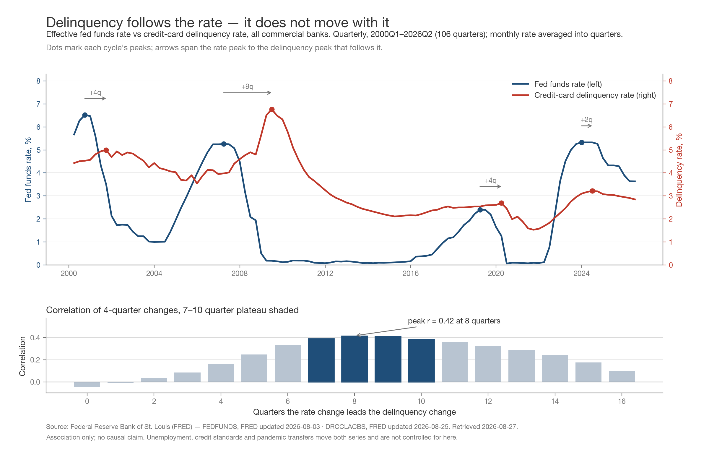

Credit-card delinquency does not move with the policy rate. It moves after it, by roughly two years.
Correlating four-quarter changes in the effective fed funds rate against four-quarter changes in the credit-card delinquency rate, the correlation is 0.42 at an eight-quarter lag and −0.05 at zero lag — the two series are essentially unrelated in the same quarter and most related two years apart. The peak is a plateau, not a point: correlation stays above 0.37 across a 7-to-10 quarter window, so the honest statement of the lag is a range, not a date.
The relationship is stronger once the pandemic is set aside, when fiscal transfers pushed delinquency to a sample low of 1.53% (2021Q3) while the rate sat at zero. Excluding 2020–21 the peak correlation is 0.56 at nine quarters; on pre-2020 data only it is 0.71 at nine quarters.
It is a timing signal, not a forecast. At the eight-quarter lag a one-point four-quarter move in the rate maps to 0.18 points of delinquency change, and the fit explains 17% of the variance over the full sample (31% excluding 2020–21). Rate direction tells a risk team roughly when to expect pressure — not how much.
Data. Two FRED series since 2000-01-01: FEDFUNDS (Federal Funds Effective Rate, monthly) and DRCCLACBS (Delinquency Rate on Credit Card Loans, All Commercial Banks, quarterly). Retrieved 2026-08-27; FRED last updated FEDFUNDS 2026-08-03 and DRCCLACBS 2026-08-25.
Cleaning and alignment. The monthly rate was averaged into quarters — a quarter's rate is the mean of its three months, which is what a rate comparison means; sampling the last month instead would discard two thirds of the observations. The join is inner, so every row is complete: 106 quarters, 2000Q1–2026Q2, no gaps and no missing values. 2026Q3 is dropped because it is partial — FEDFUNDS reports through July 2026 and DRCCLACBS through 2026Q2, and the delinquency series runs roughly a quarter behind by design.
Lag estimate. Both series are strongly trending and highly autocorrelated, so a correlation in levels would mostly measure the shared business cycle. Differencing to change removes that. Two differencing choices agree: quarter-over-quarter change peaks at nine quarters (r = 0.29), four-quarter change at eight (r = 0.42). The four-quarter version is the one charted — same question, less reporting noise.
| Check | Peak lag | r |
|---|---|---|
| 4-quarter change, full sample (n = 94) | 8 quarters | 0.42 |
| 4-quarter change, excluding 2020–21 | 9 quarters | 0.56 |
| 4-quarter change, pre-2020 only | 9 quarters | 0.71 |
| Quarter-over-quarter change, full sample | 9 quarters | 0.29 |
Cycle-by-cycle cross-check. Measuring peak to peak instead — the quarters between each cycle's rate top and the delinquency top that follows it — gives +4, +9, +4 and +2 quarters for the 2000, 2007, 2019 and 2023 cycles. That is noisier than the correlation estimate and rests on four observations, and it picks a local top rather than the whole change path. The two methods agree on the ordering — delinquency follows — and disagree on the magnitude. Treat the lag as one to two and a half years, centred near two.
Where the current cycle sits. The rate peaked at 5.33% in 2023Q4; delinquency peaked at 3.22% in 2024Q2 and has fallen to 2.85% as of 2026Q2, against a 2000–2019 average of 3.72%. The rate is now 3.63%, down 1.70 points from its peak. Eight quarters of rate cuts (four-quarter changes of −0.68 to −1.00 points, 2024Q4 through 2026Q2) have not yet landed; on the fitted slope they imply a further 0.12 to 0.18 points of four-quarter delinquency decline arriving between 2026Q3 and 2028Q2.
What this is not. Association, not causation, and univariate. Unemployment, credit standards, card originations and the 2020–21 transfers all move both series and none are controlled for here. The overlapping four-quarter windows also mean the effective sample is well below 94, so no p-value is quoted; the robustness columns above are the evidence, and the breadth of the plateau is the uncertainty.
DRCCLACBS lands about a quarter in arrears; the next observation moves the last point on this chart, and the fetch, alignment and lag estimate here re-run unchanged against it.Analysis run 2026-08-27 against FRED data retrieved the same day. Source: Federal Reserve Bank of St. Louis (FRED), series FEDFUNDS and DRCCLACBS.